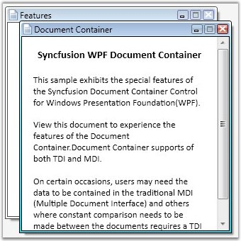

A DocumentContainer is a control that is used for holding the documents, controls and panels inside it. Using a DocumentContainer you can create interfaces like MDI and TDI, which can make the end-user to create easily navigable applications.

Figure 392: Document Container Control
This help section will demonstrate all the important properties of the DocumentContainer that will help the end-user to know about all the available features.